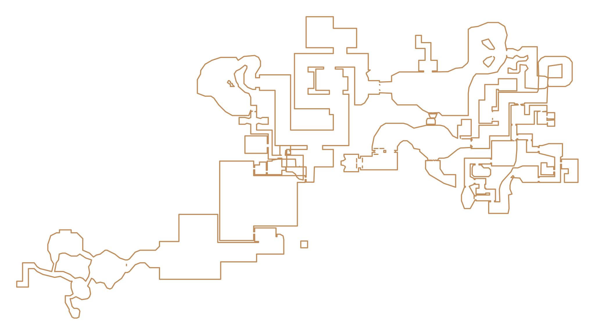

EQL Source / =Index / Item
Odd Bone Necklace
- Slot
- not recorded
- Tradeability
- not recorded — the survey names no restriction, which is not the same as recording that there is none
- What it is for
- Quellious Symbol Quests
- Stats
- not recorded
- Classes
- not recorded
- Zones
- The Warrens

North is up · floor from the game’s own mesh
Where it drops
- The Warrens — off A lesser shamanSurvey 09 · levels 4-25 · ZEM 128
As The Warrens records it: “Quellious Symbol Quests”
The survey records no trade restriction for this item. Read that as unrecorded, not as tradeable — it may be No Drop and unnoted. One screenshot of the item description would settle it.
Figures are the survey’s own. How we source.